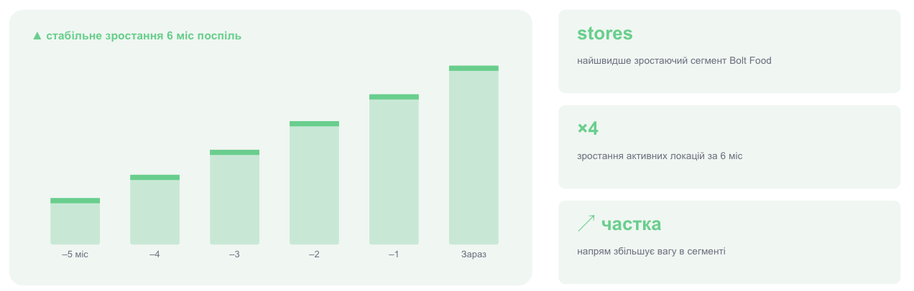
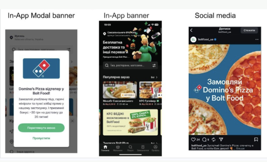
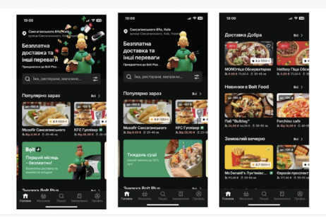
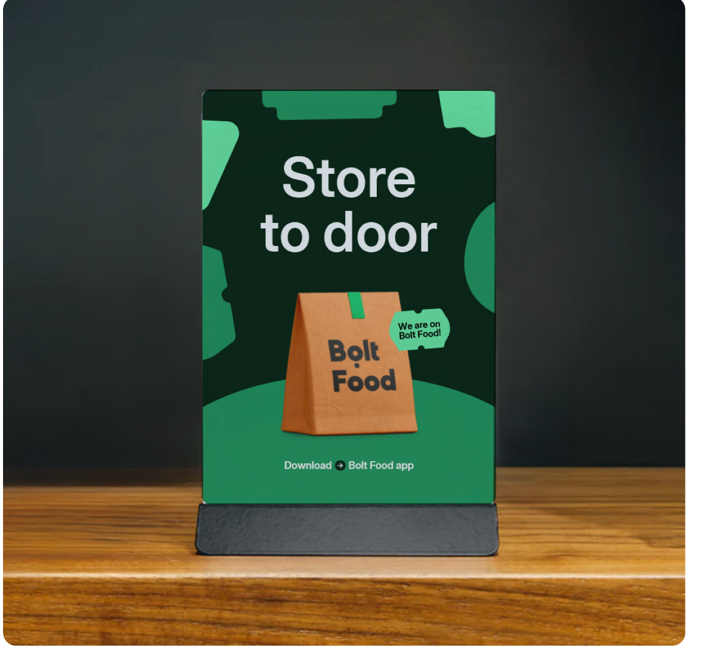
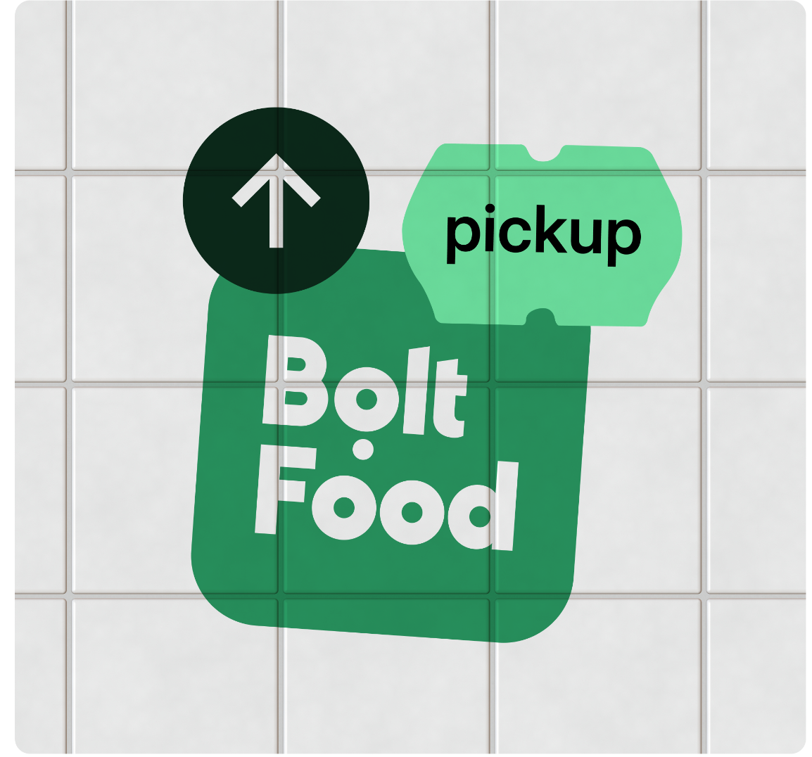

Якірний рітейл регіону — другий канал, що додає оборот без або з мінімальним % канібалізації. Україна · Червень 2026
Крос-вертикальний ефект: користувачів таксі та Food ми конвертуємо у покупців Близенько — нові цифрові клієнти поза вашою офлайн-базою.

stores — найшвидше зростаючий сегмент Bolt Food · ×4 зростання активних локацій за 6 міс · напрям збільшує вагу в сегменті. Дані ілюстративні.
Близенько = 0 на Bolt Food. Кожне замовлення — поверх наявного каналу, без канібалізації + диверсифікація залежності від однієї платформи.
Продукти біля дому — висока частота й повторні покупки. Ідеально під Bolt+ і безкоштовну доставку.
Ваші реальні ціни, синхронізація стоків, контроль асортименту й промо. Capex на інтеграцію — на нас.
Розширюємось із іншими мережами → щільніша мережа кур'єрів і більше попиту в домашньому регіоні Близенько.
Преміальні розміщення всередині застосунку — там, де клієнт ухвалює рішення про замовлення.
In-app modal (повноекранне промо при вході) · In-app банер у стрічці магазинів · Social media — пости та сторіз Bolt Food.
Банер «Безкоштовна доставка» на головному екрані · спец-категорія / окрема полиця Близенько · видимість у періоди акцій і сезонів.

In-app modal banner · In-app banner · Social media — приклади розміщень

Промо-банери та категорії на головному екрані застосунку
Комбінація каналів Bolt Food + Bolt Rides дає охоплення, недоступне поодинці — до 10× на старті.
Частково або 0 ₴. №1 інструмент для залучення нових клієнтів.
Окремі позиції або весь асортимент — через API або від Bolt.
Таргет на Нових / Втрачених / Активних — різний розмір знижки.
Банер у вкладці «Магазини» в періоди активних акцій.
Безкоштовна доставка для нових клієнтів + MOV трохи вищий за середній чек.
Передаєте фінальні ціни — без +20% ПДВ на знижку.
Брендинг у точках — Bolt підтримує оформлення та видимість бренду на місцях продажу. Звʼязок онлайн ↔ офлайн — офлайн-аудиторія Близенько дізнається про вашу присутність на Bolt Food. Спільні матеріали — банери, наліпки, POS-матеріали для промо-періодів.


Онлайн і офлайн працюють разом: магазини Близенько стають точками входу нових клієнтів у застосунок.
| Період | Хто покриває доставку | Логіка |
|---|---|---|
| Перші 6 міс (старт) | Bolt 100% | якірний рітейл регіону — заводимо клієнтів за наш кошт |
| Рік 2 | 50% Bolt / 50% Близенько | спільна інвестиція в утриманий попит |
| Рік 3 | 75% Близенько / 25% Bolt | канал уже зрілий, Bolt лишається в долі |
| Додатково | OOH-підтримка | зовнішня реклама на старті понад digital |
Безкоштовна доставка 3–6 міс — обовʼязковий елемент старту для якірного рітейлу в регіоні.
Прогноз — на старті при 60% покриття мережі; з розширенням до 100% потенціал зростає пропорційно. Повністю інкрементальний обсяг — новий канал поза наявним попитом.
Припущення: середній чек 650 ₴, 30 днів/міс. Параметри перераховуються під фактичні дані Близенько.